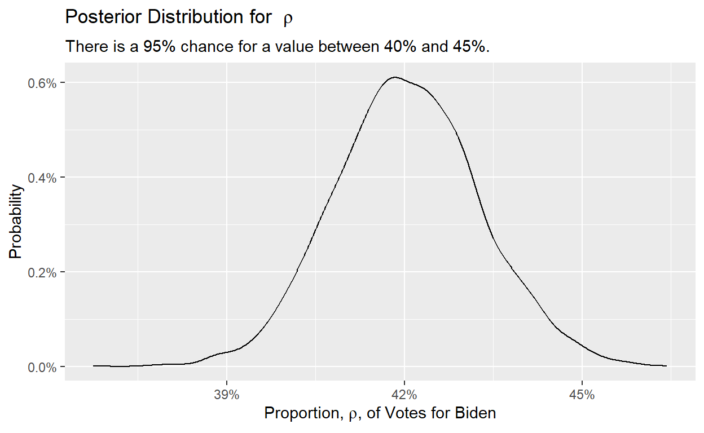

Information
Introduction
This tutorial supports Preceptor’s Primer for Bayesian Data Science: Using the Cardinal Virtues for Inference by David Kane.
The Question
The world confronts us. Make decisions we must. - Albert Einstein
Wisdom
The only true wisdom is in knowing you know nothing. - Socrates
The general question we are interested in is the future results of the 2024 election, as seen from a survey conducted March 2024.
Our specific question:
What proportion of all votes will be cast for Joe Biden in the 2024 election?
Exercise 1
In your own words, describe the key components of Wisdom when working on a data science problem.
Exercise 2
Define a Preceptor Table.
Precisely describing the Preceptor Table for this problem is the first step in trying to solve it.
Exercise 3
Describe the key components of Preceptor Tables in general, without worrying about this specific problem. Use words like “units,” “covariates,” and “outcomes.”
The way I like to think of it is that the units are the objects that are being affected (rows), while the outcome column is how the units are being affected.
Exercise 4
Create a Github repo called tutorial-4. Connect it to a
new R Project called tutorial-4. Edit the
.gitignore file to ignore the Rproj file.
In the Console, run
tutorial.helpers::show_file(".gitignore"). CP/CR.
Exercise 5
What is the outcome for this problem?
Looking at the question, having the outcome as “the candidate for whom the vote was cast” (or something similar) is too broad. We don’t actually need to know the name of the candidate. We just need to know if the vote was cast for Biden or not. The name of the candidate, if it was not Biden, is irrelevant to our question. So, we can represent the outcome as 0 (did not vote for Biden) and 1 (did vote for Biden).
Realistically, then, this question only has 1 outcome. This means that the problem would be a predictive model.
Exercise 6
What are the treatments, if any, for this problem?
This is a predictive model, not a causal model, so there are no treatments, by definition. Recall that treatment is just a covariate which, given the question we are trying to answer, might at least in theory be manipulable.
Exercise 7
What moment in time does the Preceptor Table refer to?
Take note of the date of the Preceptor Table, as this will be different from our data. When working with multiple data sources, it’s important to keep track of the date and how the information may be affected by it.
Exercise 8
Describe in words what the Preceptor Table would look like for this problem.
The Preceptor Table for this problem looks like this:
| Preceptor Table | |
| Voter ID | Voted for Biden |
|---|---|
| 1 | 0 |
| 2 | 0 |
| ... | ... |
| 200 | 1 |
| 201 | 0 |
| ... | ... |
| 2078 | 1 |
| 2079 | 0 |
| ... | ... |
On the other hand, let’s take a look at our data for today:
The data we have came from a YouGov poll pdf of 1,559 US adult citizens, conducted March 10 - 12, 2024.
Exercise 9
Run the following code to see what our data looks like in a data table.
tibble(poll_ID = c("1", "2",
"...", "200", "201", "...", "1,559"),
biden = c("0", "0",
"...", "1", "0", "...", "1")) |>
gt() |>
tab_header(title = "Polling Data") |>
cols_label(poll_ID = "Poll ID",
biden = "Would Vote for Biden") |>
tab_style(cell_borders(sides = "right"),
location = cells_body(columns = c(poll_ID))) |>
cols_align(align = "center", columns = everything())Note the following: 1. Our Polling Data includes exactly 1,559 rows. We don’t know how many rows are in our Preceptor Table because we don’t know how many people will vote in November 2024.
The ID column is “Voter ID” in the Preceptor Table and “Poll ID” in the Polling Data. This means that Person 2 in the Data Table is not the same as Person 2 in the Preceptor Table.
The variable labels differ. “Voted for Biden” is not the same thing as “Would Vote for Biden.
Exercise 10
Create a new Quarto Document. Set the title to Models
and the author to you. Render the document to make sure it works, using
Control/Command + Shift + K. Remove all the junk after the
YAML header. Inside of the YAML header, add
execute: echo: false. Save the file as
models.qmd. Note that the .qmd extension will
be added automatically.
Type tutorial.helpers::show_file("models.qmd") into the
Console. CP/CR.
The question from the poll that we will be analyzing is:
If an election for president were going to be held now and the Democratic nominee was Joe Biden and the Republican nominee was Donald Trump, would you vote for…
The allowed choices are “Joe Biden,” “Donald Trump,” “Other,” “Not Sure,” and “I would not vote.”
Exercise 11
Load up the tidyverse package
library(tidyverse)Exercise 12
Create a new code chunk in the Quarto Document. Add
#| label: setup and #| message: FALSE. Load in
the tidyverse library there as well. Render the
document to check that you get no error messages. In the console, run
tutorial.helpers::show_file("analysis.qmd", start = -5).
CP/CR
Exercise 13
In your own words, define “validity” as the term is used in the Primer.
42% of those polled indicated Joe Biden. Although rounding makes it impossible to know for sure, we will assume that 655 of the 1,559 “US adult citizens” would vote for Biden.
Exercise 14
Provide one reason why the assumption of validity might not hold for this problem.
What we tell other people we will do is often not what we actually do. Consider a voter who is embarrassed about her support for Biden. Perhaps she perceives the interviewer as a Republican and doesn’t care to admit to him, in March, her support for Biden. But, in November, in the privacy of the polling booth, she votes for Biden. In her case, the outcome from the data (what she told the pollster) did not have a valid correspondence with her behavior in the polling booth.
Exercise 15
Summarize the state of your work so far in one sentence.
Start with describing the data you have (i.e. where it came from, when it was conducted, etc.).
Then state the specific question you are trying to answer. Use phrases like “We seek to” or “We utilize this data to”.
Note: In any question related to polling, you always want to include the name of the polling organization, the date and the number of individuals successfully contacted.
Edit your answer as you see fit, but do not copy/paste our answer
exactly. Add this summary to models.qmd,
Command/Ctrl + Shift + K, and then commit/push.
Justice
Justice is truth in action. - Benjamin Disraeli
Exercise 1
In your own words, name the four key components of Justice (without describing them) for working on a data science problem.
Exercise 2
In your own words, define a Population Table.
Exercise 3
Our Population Table has been pre-mapped to the object
population_table. Type this into the following box and
observe our Population Table.
population_tableNotice how, although the Population Table is helping us by adding data, the data that it’s adding doesn’t convey validity, i.e. it is measuring a different metric (in this case the voters’ opinions from different time periods). We don’t know if the voters’ opinions changed over that time period, making the data invalid.
Exercise 4
In your own words, define the assumption of “stability” when employed in the context of data science.
Stability is all about time. Is the relationship among the columns in the Population Table stable over time? In particular, is the relationship — which is another way of saying “mathematical formula” — at the time the data was gathered the same as the relationship at the (generally later) time references by the Preceptor Table.
Exercise 5
Provide one reason why the assumption of stability might not be true in this case. (This is somewhat of a trick question.)
Stability might become important as we think about the actual process by which we might meet the two voters in our original question, but, in terms of the Population Table itself, there is no problem.
Exercise 6
In your own words, define the assumption of “representativeness” when employed in the context of data science.
Ideally, we would like both the Preceptor Table and our data to be random samples from the population. Sadly, this is almost never the case.
Exercise 7
Provide one reason why the assumption of representativeness might not be true in this case.
Imagine that YouGov only polled residents in Washington DC. That would be bad, even if everyone polled answered truthfully. We would end up with data which was much more pro-Biden than the country as a whole.
The assumption of representativeness is never completely true. We can only hope/assume that it is true enough that the inferences we draw from our data can be roughly applied to our question. Let’s assume that is this case.
Exercise 8
In your own words, define the assumption of “unconfoundedness” when employed in the context of data science.
This assumption is only relevant for causal models. We describe a model as “confounded” if this is not true. Since this is a predicative model, unconfoundedness is not relevant.
Exercise 9
Summarize the state of your work so far in two or three sentences. Make reference to the data you have and to the question you are trying to answer. Feel free to copy from your answer at the end of the Wisdom Section. Mention one specific problem which casts doubt on your approach.
Edit the summary paragraph in models.qmd as you see fit,
but do not copy/paste our answer exactly.
Command/Ctrl + Shift + K, and then commit/push.
Courage
Courage is found in unlikely places. - J.R.R. Tolkien
Exercise 1
In your own words, describe the components of the virtue of Courage for analyzing data.
Exercise 2
Load the brms package.
library(...)The brms package provides a user-friendly interface to work with the statistical language Stan, the leading tool for Bayesian model building.
Exercise 3
Load the tidybayes package.
library(...)The tidybayes
package aims to make it easy to integrate popular Bayesian modeling
methods into a tidy data + ggplot workflow.
Exercise 4
To learn about what the tidybayes package does, let’s use the built-in help menu.
First, load in the tidybayes package into the Console.
Now, type ?tidybayes into the Console. Copy/Paste the
first paragraph under the Details section.
Exercise 5
Add library(brms) and library(tidybayes) to
models.qmd. Command/Ctrl + Shift + K. At the
Console, run:
tutorial.helpers::show_file("models.qmd", pattern = "brms|tidybayes")CP/CR.
Exercise 6
Run this code in order to generate the polling data.
poll_data <- tibble(biden = c(rep(1, 655),
rep(0, 904)))
slice_sample(poll_data, n = 10)We don’t care exactly who voted for Biden and who did not. In that sense, the rows of the data (and the Preceptor Table) are “exchangeable,” which means (roughly) that nothing changes if we re-arrange the IDs of any of the rows.
Exercise 7
Use brm() to fit a model. Use the arguments:
formula = biden ~ 1, data = poll_data,
family = bernoulli(), refresh = 0,
silent = 2, and seed = 9.
brm(formula = ...,
... = poll_data,
family = bernoulli(),
... = 0,
silent = ...,
... = 9)This will take a little while to run.
An interesting thing to note in this model is the inclusion of
seed. In computer science, a seed causes a random
process to produce the same answer as long as the same seed is used.
Fitting Bayesian models requires an algorithm which uses randomness.
Running brm() twice will produce very slightly different
answers, although the answers will not be substantively different enough
to matter.
However, for teaching, we want your answer to be identical to ours. If we both use the same seed, it will be.
Exercise 8
Behind the scenes, we have assigned the result of this call to
brm() to a new object: fit_bern. Type
fit_bern and hit “Run Code.”
fit_bernHere’s a way that you can understand the concept of
seed:
If you played MineCraft as a kid, then it’s the same concept here. If you load the same seed, it loads up the same world.
Exercise 9
Run family() on fit_bern.
family() provides information about the “family” of the
error term and the link between it and the dependent variable.
family(...)bernoulli() indicates a Bernoulli distribution, which is
a probability distribution for a random variable that has exactly two
possible outcomes. It is used to model situations with binary outcomes,
such as success/failure, yes/no, or true/false.
Exercise 10
Run formula() on fit_bern.
formula() returns the statistical equation which relates
the dependent variable to the independent variable(s).
formula(...)In this case, we have the simplest possible formula.
biden, which is a zero/one binary variable is a function of
a constant. There are no independent variables.
Exercise 11
Run nobs() on fit_bern. The
nobs() function returns the number of
observations.
nobs(...)In this case, we get the answer of 1559, which indicates
that we have 1,559 useful, non-error observations in our data.
Exercise 12
Add this formula — $$ biden_i = \mu + \epsilon_i $$ —
to model.qmd. Command/Ctrl + Shift + K. Ensure
that the formula looks correct.
Run show_file("models.qmd", pattern = "biden_i")
The “Intercept” is the key part of the model. Because the family is Bernoulli and the link function an identity, the model we are estimating looks like:
\[ biden_i = \mu + \epsilon_i \]
\(biden_i\) is a binary variable
indicating whether or not voter \(i\)
voted for Biden. \(\mu\) is true
proportion of Biden voters. \(\epsilon_i\) is the “error term,” the
difference between the vote of person \(i\) and the true proportion of Biden
voters. \(\mu\), also called the
“Intercept,” is about 0.42. The value of biden is either
0 or 1. So, the value of \(\epsilon\) is either -0.42 or + 0.58. No
other value is possible.
Exercise 13
Create a new code chunk in models.qmd. Add two code
chunk options: label: model and cache: true.
Copy/paste the code from above for estimating the model using
brm() into the code chunk, assigning the result to
fit_bern.
Command/Ctrl + Shift + K. It may take some time to
render models.qmd, depending on how complex your model is.
But, by including cache: true you cause Quarto to cache the
results of the chunk. The next time you render models.qmd,
as long as you have not changed the code, Quarto will just load up the
saved fitted object.
To confirm, Command/Ctrl + Shift + K again. It should be
quick.
At the Console, run:
tutorial.helpers::show_file("models.qmd", start = -10)CP/CR.
What you entered in the previous exercise is \(\LaTeX\) math. The “_” symbol causes what
follows to be a subscript. The “" symbol causes \(\LaTeX\) to evaluate what follows as a
special operator. In this case \rho generates the Greek
letter \(\rho\).
Note that in order to enter math in \(\LaTeX\), the math has to be surrounded by
dollar signs: $. If you use a single dollar sign (one at
the start and one at the end), then the mathematics is rendered in the
text of the paragraph in which it appears. If you use double dollar
signs, $$, the the math is rendered with a skipped line
both before and after.
Exercise 14
Run posterior_interval() on fit_bern. The
posterior_interval() function returns 95% intervals for all
the parameters in our model.
posterior_interval(...)There are several parameters in the model, almost all of them so-called “nuisance” parameters, meaning that we don’t care about them. Their particular values don’t really help us to directly calculate any quantity of interest.
Exercise 15
Run fixef() on fit_bern. The
fixef() returns information about the
fixed effects in the model.
fixef(...)This estimates that Biden’s approval rating will go down by roughly 32 units, with an estimated error rate of 5 units. Remember these numbers, as we will be converting them into proper percentages later.
Exercise 16
Run pp_check() on fit_bern with the
type argument set to "bars". The
pp_check() runs a posterior
predictive check.
pp_check(..., type = "...")In this case, there are two possible outcomes: 0/1. The actual values
in the data are labeled y. We use our fitted model,
fit_bern to generate 10 alternate data sets, 10 “fake” data
sets. What might the number of votes for (and not for) Biden look like
if fit_bern is true. The graphic demonstrates that the fake
data is very similar to the real data, thus suggesting that our model
has captured reality, at least somewhat.
If the fake data had looked very different from the real data, there is a problem with our model.
Exercise 17
Write a few sentences which summarize your work so far. The first few sentences are the same as what you had at the end of the Justice Section. Add one sentence which describes the modelling approach which you are using. Then, add a sentence which tells us something about the model.
95% Credible Interval: The credible interval ranges from -0.43 to -0.27. This means that with 95% probability, the true log-odds of support for Biden lies within this range. Converting these bounds to probabilities, we would have a 95% credible interval for the probability of support for Biden of approximately 39% to 43%.
Exercise 18
Update models.qmd. Add the mathematical formula, in
\(\LaTeX\) and surrounded by double
dollar signs, for your model. Third, add a new code chunk which creates
the table of model parameters. Command/Ctrl + Shift + K to
ensure that everything works.
At the Console, run:
tutorial.helpers::show_file("models.qmd", start = -8)CP/CR.
Temperance
Temperance is a tree which as for its root very little contentment, and for its fruit calm and peace. - Buddha
Exercise 1
In your own words, describe the use of Temperance in finishing your data science project.
Exercise 2
What is the general topic we are investigating? What is the specific question we are trying to answer?
Data science projects almost always begin with a broad topic of interest. Yet, in order to make progress, we need to drill down to a specific question. This leads to the creation of a data generating mechanism, which can now be used to answer lots of questions, thus allowing us to explore the original topic broadly.
Exercise 3
To answer our question, we need to create a newdata
object. Which variables (e.g., which columns) do we need to include in
this object?
Note that this is in general, and not related to this tutorial in any way.
A newdata tibble must include columns for all the
right-hand side variables — all the “covariates” — in the model, and
with all the same variable names and, mostly, variable types.
But, in this case, we are using an intercept-only model, so there are no variables on the right-hand side of the formula.
Exercise 4
Here is the R code which creates the newdata object:
tibble(.rows = 1). Type it into the code exercise block and
hit “Run Code.”
newdata <- tibble(... = 1)With an intercept-only model, there is only one possible answer since
we can’t choose different values for the variables in the formula. So,
the ndata object only has one row.
Exercise 5
Behind the scenes, this tibble has already been assigned to us as
ndata. Type this into the box below to make sure that it
works.
ndataExercise 6
Now that we have the newdata object, we can create a
pipe which uses out fitted model to answer our question. Begin by typing
fit_bern and clicking “Run Code.”
Exercise 7
Recall the question that we were answering:
What proportion of all votes will be cast for Joe Biden in the 2024 election?
Let’s make a graph to answer this question.
Start by piping fit_bern to
add_epred_draws(), with newdata = ndata being
the argument. Now continue the pipe to select(), selecting
.epred as the argument.
... |>
add_epred_draws(...) |>
...(.epred) |> It’s crucial to understand the value of the
add_epred_draws() function. For starters, it generates a
series of predicted values from the posterior distribution for the new
data. These predictions represent the distribution of the intercept’s
expected value.
Exercise 8
Now continue the pipe to ggplot(), setting
x to .epred inside of the aesthetics.
... |>
ggplot(...(x = ...))This will create a blank plot because we didn’t add anything yet.
The function add_epred_draws() is so powerful because,
unlike add_predicted_draws(), it doesn’t factor in any
additional randomness of individual observations. Essentially, it
assumes that the data was recorded absolutely perfectly, and therefore
generates a model that represents a picture-perfect scenario.
Exercise 9
Let’s add geom_density(), setting y to
after_stat(count / sum(count)) inside of aesthetics.
Remember to add geom_density() with a +
instead of a |>!
... +
...(aes(... = after_stat(... / sum(...))))By setting y = after_stat(count / sum(count)), the
density plot is normalized such that the total area under the curve is
equal to 1. This makes it easier to interpret the plot as a probability
distribution.
The y-axis now represents the proportion of the total observations that fall within each bin, which is useful for visualizing the distribution of the expected predictions.
Exercise 10
It would also be a good idea to include
scale_x_continuous(labels = scales::percent_format()) and
scale_y_continuous(labels = scales::percent_format()).
Remember to also add these with a + rather than a
|>.
... +
...(labels = ...::percent_format()) +
scale_y_continuous(... = scales::...())The scale_x_continous (and its y version)
modify the values on that scale (x or y).
The argument labels = scales::percent_format() ensures
that the values are in % format.
Exercise 11
Finish it off by adding labels for the title, subtitle, and the axes
using labs().
... +
labs(...)Your finished graph should look something like this:
## Adding missing grouping variables: `.row`
Exercise 12
Create a new code chunk in models.qmd. Label it with
label: plot. Copy/paste the code which creates your
graphic. Command/Ctrl + Shift + K to ensure that it all
works as intended.
At the Console, run:
tutorial.helpers::show_file("models.qmd", start = -8)CP/CR.
Exercise 13
Write a paragraph which summarizes the project in your own words. The first few sentences are the same as what you had at the end of the Courage Section. But, since your question may have evolved, you should feel free to change those sentences. Add at least one sentence which describes at least one quantity of interest (QoI) — presumably one that answers your question – and which provides a measure of uncertainty about that QoI.
Edit the summary paragraph in models.qmd as you see fit,
but do not copy/paste our answer exactly.
Command/Ctrl + Shift + K.
Exercise 14
Write a few sentences which explain why the estimates for the quantities of interest, and the uncertainty thereof, might be wrong. Suggest an alternative estimate and confidence interval.
Exercise 15
Rearrange the material in models.qmd so that the order
is graphic, paragraph, math and table. Doing so, of course, requires
sensible judgment. For example, the code chunk which creates the fitted
model must occur before the chunk which creates the graphic.
Command/Ctrl + Shift + K to ensure that everything
works.
At the Console, run:
tutorial.helpers::show_file("models.qmd")CP/CR.
Add rsconnect to the .gitignore file. You
don’t want your personal Rpubs details stored in the clear on Github.
Commit/push everything.
Summary
This tutorial covered Chapter 4: Models of Preceptor’s Primer for Bayesian Data Science: Using the Cardinal Virtues for Inference by David Kane.
Download answers
- Click the button to download a file containing your answers.
- Save the file onto your computer in a convenient location.
(If no file seems to download, try clicking with the alternative button on the download button and choose "Save link as...")